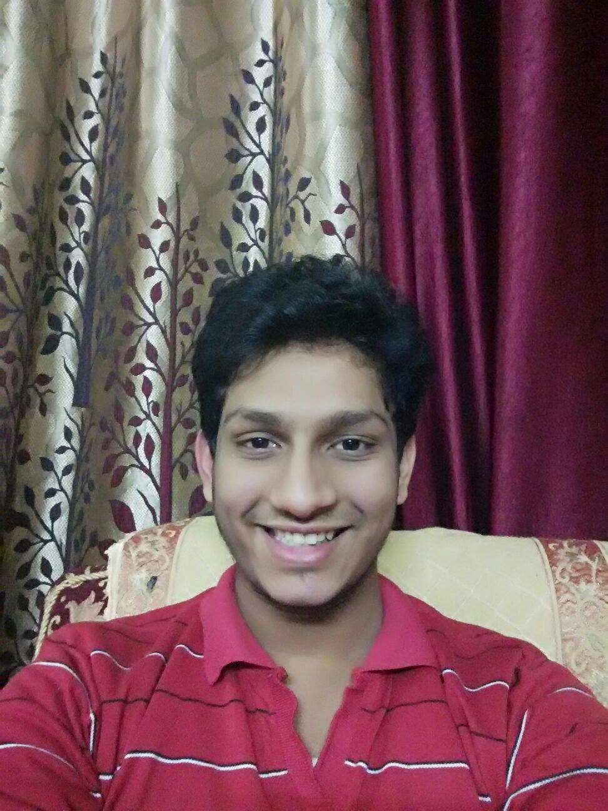

About me

I am a sophomore undergraduate in IIT Kanpur.
I grew up in Haridwar and did my schooling from Delhi Public School, Ranipur. Due to my prior interest in Programming and Mathematics, I decided on Computer Science to be my major, a decision which I will never regret.
I usually spend my time practicing on some competitive programming website or reading about topics on the same. I also have a keen interest in anything related to science and usually spend my time reading articles of the same on various platforms.
I also am a hardcore foodie and am always ready for an eating challenge.
I also like to play Table Tennis, Basketball and Poker when I am not doing any of the above.